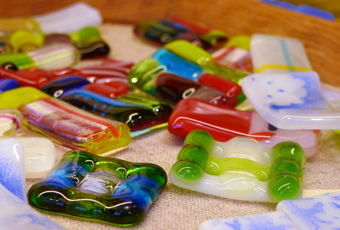
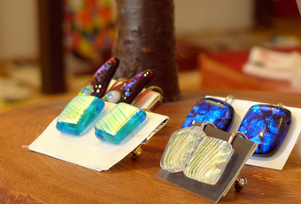
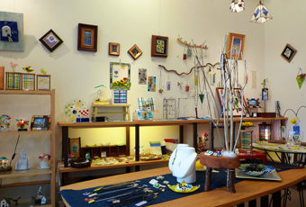

SHOP INFORMATION工房そら
心を込めたアートに出会える場所

倉敷えびす商店街に位置する「工房そら」はステンドグラス・ガラスフュージング・七宝焼・木工のお店です。「毎日の生活に夢と彩りを添えることができたら、もっと楽しい。会話もはずむ。」そう信じ、夫婦二人三脚で心を込めて手作りしているそうです。「もの作りの楽しさを感じてほしい」と、毎月開催されているワークショップでは、ステンドグラスなどの体験ができます。
色鮮やかな作品の数々
ガラスを高温で溶かし融合させるガラスフュージングという技法を用いて制作した時計やアクセサリー、ステンドグラスのランプやミラーなど、店内には色とりどりの作品が並んでいます。ガラスと七宝焼を融合させた、他ではなかなか出会えない作品もあります。
プレゼントに最適

店内の商品はオーダーメイドでデザインやサイズを変えて注文することができます。一番人気は時計。新築祝いや結婚祝いなどの贈り物に最適です。好みのデザインで作ってもらうことができるので、ペットの写真を持ってくる人もいるそうです。壁に彩りを添えてくれる一輪挿しや、ネックレスなどのアクセサリー、手頃な値段で買えるストラップや箸置きなど、どれも優しい色合いです。店内の作品は見ているだけで癒されます。
幸せな生活を演出

倉敷駅から徒歩5分、手作りの店が多く並ぶ倉敷えびす商店街の中に「工房そら」はあります。美観地区へは徒歩5分というとても便利な場所です。店内には作品がセンス良くディスプレイされていて、あれもこれもと目移りしてしまう素敵な空間。ひとつひとつ丁寧に手作りされているため、同じものはありません。世界にひとつだけの、あなたのお気に入りをここで見つけてください。
Googleマップでみる
一覧に戻る